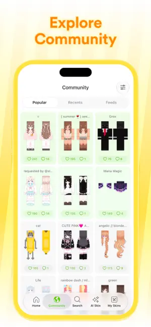
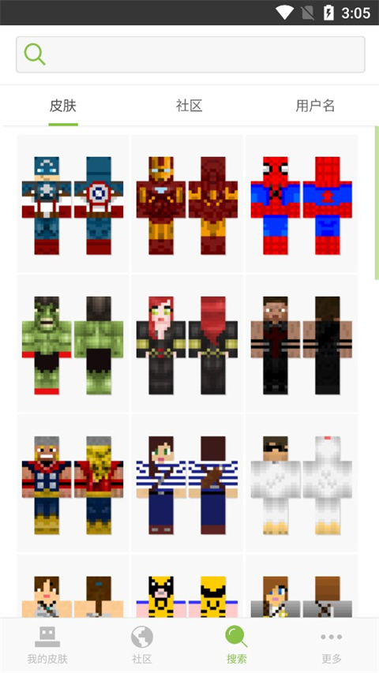

Skinseed 到底值不值得装？快问快答一次说清
Skinseed 是目前 Minecraft 社区最火的皮肤工具之一，搜皮肤、改皮肤、扒皮、AI 生成都包了。整理了九个新手最常问的问题，从"它能干什么"到"装完怎么上手"一次答完。
整理一篇关于 Skinseed 的快问快答——挑了 Minecraft 玩家翻应用商店时最容易纠结的九个问题，直接给答案，不绕弯。
Skinseed 是什么，和其他皮肤工具有什么不一样？
从它的官网介绍来看，Skinseed 是一款专为 Minecraft 玩家打造的皮肤管理与编辑器，核心卖点就两个：一是内置了超过一千万规模的社区皮肤库，二是自带功能完整的 3D 编辑器。跟市面上其他皮肤工具比，它最大的优势是把"找—改—导"这条链路完全打通了——不用在浏览器、在线编辑器、文件管理器之间来回切换。社区皮肤库的热门/最近/信息流三种逛法也是它独有的设计，不是简单堆一堆图让你瞎找。

谁需要装 Skinseed？
三类人最刚需。第一类是"换装党"，喜欢隔三差五换个新皮肤的，社区千万库随便逛，还能按关键词搜角色、搜风格；第二类是"手残但想有专属皮肤"的，图片转皮肤和 AI 生成这两个功能把门槛压得很低，拿张动漫图就能生成底稿，再花十分钟改改五官就是自己的了；第三类是"二次创作者"，看到别人的皮肤想改一改穿上，详情页直接点 Edit 就能开画，不用自己新建。如果你从来没换过皮肤，装一个也不亏——逛一圈社区就能发现原来 Minecraft 的皮肤生态这么热闹。
怎么装？要翻墙吗？
不需要翻墙，国内网络直接能下。安装包从官方下载拿就行，装完就能用。首次打开会让你选语言，中文界面已经做得很完整了，搜索、编辑、导出这些主要功能的菜单标签都翻译成了中文，老玩家直接切英文也没问题。
搜到的皮肤怎么挑？三个流有什么区别？
社区皮肤库顶部三个切换标签：Popular（热门）、Recents（最近）、Feeds（信息流），各有各的用法。热门流是平台按点赞和下载排的精选位，质量普遍高，拿来当二次修改的底稿很合适；最近流按发布时间倒序，能看到刚出炉的作品，风格杂但容易淘到冷门好图；信息流是混合推荐，会把你关注过的创作者和互动过的风格往前提。卡片上直接显示点赞数和评论数，这两个数字是第一道筛子——点赞过万的皮肤上身效果基本不会差。

编辑器难不难？零基础能上手吗？
界面分三块：顶部导航区、中央画布、底部工具栏，第一次打开认清楚这三块就不会慌。中央画布支持滑动旋转看角度、点按部位选中编辑对象、双指缩放画细节——所见即所得的体验比在线编辑器好太多。底部工具栏从左到右是色轮、画笔、橡皮、吸管、灯泡（明暗）、撤销重做，还有复制粘贴翻转填充这些面操作。核心循环就是：选部位 → 选面 → 落笔画几笔 → 旋转预览 → 点对勾确认。把这条循环走顺，后面什么功能都是在给这条流水线加装备。更细的部位切换、图层操作、明暗调节这些进阶参数，在skinseed文档里有图文对照的分步说明。
图片转皮肤到底靠不靠谱？
靠谱，但要搞清楚它是底稿不是成品。导入一张图片，应用自动把色彩映射到皮肤模型上——单主题大色块的图效果最好，人物正面照生成后几乎只需要重描五官。出稿质量的三条规律：图越简单稿越能看，人物正面照最合适，永远把它当地稿。生成后必修三步：五官重画（用镜像模式保证对称）、清理噪点（吸准主色用填充替换杂块）、补明暗（加两三档体积感）。修完保存就能走正常导出流程。
导出进游戏方便吗？
Skinseed 的导出流程是目前所有工具里最顺滑的之一。不管是社区直接拿来用的皮肤，还是自己改过或 AI 生成的，存进衣橱后一键就能导出到游戏。新版甚至支持直接跳转到游戏内皮肤切换界面，不用手动找文件复制。要注意的是导出前最好旋转预览一下各个角度——平面画布画的时候容易漏看背面和手臂内侧的细节。
有什么坑需要提前知道？
三个常见的。第一，社区内容实时联动，同一个人隔段时间搜同一个词，结果可能不一样，别以为是 Bug；第二，图片转皮肤对细节繁杂的图会糊成噪点，拿风景图或文字图去转基本就是浪费时间；第三，社区作品来自玩家投稿，魔改之后发布记得注明灵感来源，尊重原作者是社区的基本规矩。另外搜索关键词英文结果通常比中文多，因为社区里英文投稿占比高，搜不到时换个英文词试试。
长期用下来值得留吗？
值得留。Skinseed 把"找皮肤"这件事从"上网搜图→下载→导入编辑器改→导出→进游戏"的五步变成了"逛社区→点保存→导出"的三步，省下来的时间不说，关键是社区库和编辑器的绑定让换皮肤这件事本身变成了一种乐趣。如果你还没装过类似工具，它会打开一个你之前没意识到的 Minecraft 皮肤生态世界。
Skinseed 的完整资料在三个代码仓库都能拿到，GitHub 那边是主维护源，Gitee 和 GitCode 做国内镜像，方便不同网络环境的人查阅和备份。